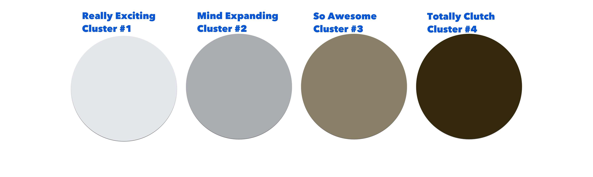
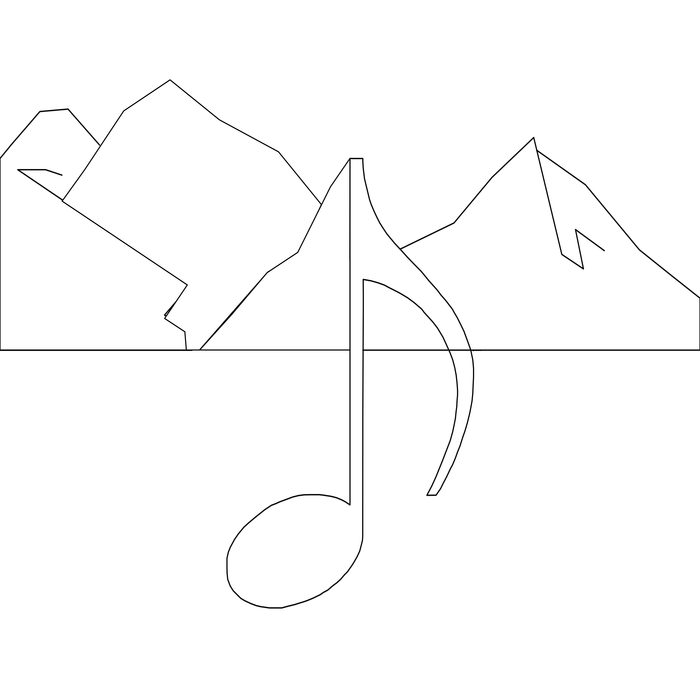
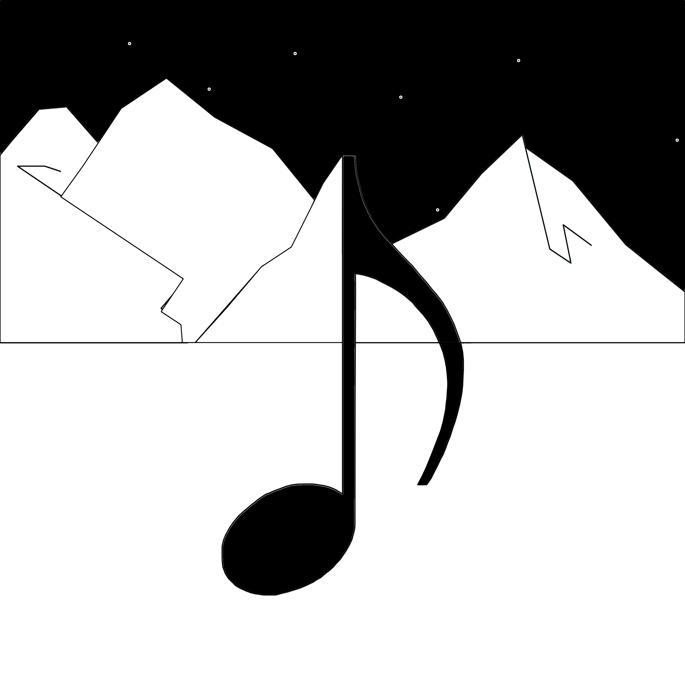

Jazz Shot is a computer algorithm which synthesizes synesthesia in order to translate photographs into jazz music. There are two types of jazz music: Good Jazz, and Avant-Garde Jazz. One might interpret this jazz as being more on the Avant-Garde side of things. Experimental, perhaps. A bit like Cecil Taylor in slow motion, with literally perfect time.
Tools in the App
In order to build Jazz Shot, I needed to get the R,G,B values of a bunch of colors. I need these values in order to create the initial values of my empty clusters for k-means clustering. To do that, I looked at color wheels online, and then found the correct R,G,B values here. Next, I needed to turn those colors into useful code. To do that, I found this awesome color-format- translation website.
Design of the App
obj-c front-end iOS app -->> c algorithm for image analytics
The obj-c front-end runs a user interface allowing the user to either capture or select a photo. The photo is parsed in obj-c and a file is output wherein the first line is: width height (in pixels), and every line after that is just r g b r g b r g b etc etc etc. That text file is read into the c script (jazzshot.c) and then processed.
jazzshot.c
I have two important structs:
// this is a pixel
typdef struct pixel {
int red;
int green;
int blue;
} pixel_t;
// this is an image
typdef struct image {
int height;
int width;
pixel_t pixels[width][height];
} image_t;
This is where we get to the cool stuff.
PHILOSOPHY OF THE APP
Jazz Shot turns an image into a musical composition. To do this, the composition of the image translates to the composition of the music. The colors of the image translate to the notes of the music.
How to Translate Color Into Sound
There are an infinity of possible translations of color into sound. Maybe a b# sounds like dark purple to you, but it sounds like olive green to me. I goofed around on Wikipedia for a while, and then after some googling (what academics call research), I stumbled upon this amazing website. But having my app upload and download from that site would be far too much work. So I went down the rabbit hole of weird piano blogs, and found this much simpler tool:
Using that mapping, I can now basically shift colors to their closest approximations on that chart and then generate the appropriate piano key notes (it is important to note (bad pun intended) that as piano notes are discrete, whereas colors are continuous, I must essentially “cast” the colors to their closest “integer” approximations, so to speak). But note that the above chart is in nm - and I’m using R,G,B. So the final translation comes out as:
How to Translate Image Composition Into Musical Composition
The compositional elements of a photograph are debatable. For the purposes of Jazz Shot, I start by finding centroids of common colors using a k-means algorithm in order to select which notes to play. But that begs the question: when should I play those notes? I use the X,Y location of the centroids of these common-color clusters to determine the location where the note begins, and I use the size (approximate width) of the color-cluster to determine how long the note should last for. But playing just one note would be boring, so instead I play a scale, starting with the note we selected based off of color. This means I need a way to select which scale pattern to use, and which rhythm to play this scale in.
Scales
Based off of a meta-survey of various non-academic sites online with dubious English-language skills and more than zero instances of classic clip- art, I get the impression that Jazz pianists tend to rely on the modal scales. Wikipedia, the world’s foremost bonafide source of 100% concrete truth, appears to back this up. According to that unquestionable bedrock of intelligencia, the most important modal jazz scales are the following:
I
Ionian mode
C D E F G A B C
II
Dorian mode
C D E♭F G A B♭ C
III
Phrygian mode
C D♭ E♭ F G A♭ B♭ C
IV
Lydian mode
C D E F# G A B C
V
Mixolydian mode
C D E F G A B♭C
VI
Aeolian mode
C D E♭F G A♭B♭C
VIIø
Locrian mode
C D♭E♭F G♭A♭B♭C
I intuitively feel that the more flat/sharp the notes on a scale are, the more entropic the scale will feel. If I assign 1 point to every sharp note, and 2 points to every flat note, and map in descending order of points, I get the following:
Locrian mode: 10 points
Phrygian mode: 8 points
Aeolian mode: 6 points
Doriam mode: 4 points
Mixolydian mode: 2 points
Lydrian mode: 1 point
Ionian mode: 0 points
Now I need to translate visual entropy into audible entropy. For each centroid, I will find the “distance” between each pixel in the centroid and the average color, and then I will find the average “distance.” I will calculate distance using the standard color distance formula:
Point1 has R1 G1 B1
Point2 has R2 G2 B2
// Distance between colors is
d=sqrt( (r2-r1)^2+ (g2-g1)^2+ (b2-b1)^2 )
// Percentage is
p=d/sqrt( (255)^2+ (255)^2+ (255)^2 )
I will then equate this average color “distance” to a metric of “entropy” (note that I am using some mathematical vocabulary quite loosely in this post. I am fully aware that distance, entropy, integer, cast, etc. really do not mean what I use them to articulate in this post. But a more technical vocabulary would be a) harder to write with and b) harder for people interested in this from a jazz rather than computer science background to understand).
(Computer Science folks should note that I deliberately using only a single iteration of k-means clustering, so when I say “k-means clustering” I’m honestly using the term very loosely. I designed it this way in order to ensure a decent number of separate notes.)
Rhythm/Pattern
I am not going to do anything too fancy with the rhythm/pattern. In fact, I am going to do almost nothing with it, because I think the more complexity I put into this thing, the less likely it is to ever produce anything even remotely listenable. So here is my rhythm algorithm:
// width of the centroid in %
W = ( Width of Color Centroid ) / ( Width of Image )
// height of the centroid in %
H = ( Height of Color Centroid ) / ( Height of Image )
// very rough estimation of average diameter of centroid in %
AV = ( W + H ) /2// length of pattern of notes, in quarter-notes, within a 16-bar
sequence
L = AV *4*16// distance from center of centroid to center of image
R = distance from center of centroid to center of image
RP = R / (Whichever is largest, width or height of image)
// where in the 16-bar sequence the pattern begins
S = RP *4*16
What’s Next?
Over the coming 2 weeks I will be coding the c and obj-c components of Jazz Shot. As I progress, I will update this blog with open source code, explanations of my algorithms, and more music-oriented posts such as this
one (featuring a lot of cool pictures and pseudocode and jokes about Wikipedia).
What is this?
This is my final project for History of Jazz Since 1965 (SP16) at Dartmouth College, taught by Professor Don Glasgo, who didn’t hear me say I don’t like Cecil Taylor and who should please give me an A on this assignment.
Jazz Shot, Part II: Fixes & Image Data
In response to my last post, I received the following feedback from my friend Clara Chin, who actually plays piano (as opposed to Who Actually Read the Wikipedia Entree On Pianos, as I might be generously described):
"...you can technically start a mode on any note, so locrian and dorian can have the same number of flats..."
I thus propose the following solution for determining modal scale based on a color centroid:
Find the percent “entropy” of the color of the centroid
Calculate each of the modal scales starting with the note produced by the average color of the centroid
Sort the produced modal scales by “entropy” (as described in the last post)
Elect a mode based on relative “entropy” of the color centroid (as described in the last post)
In other words, the same process as before, but dynamic rather than static, due to the permeative nature of modal scales.
Image Data
Here are some things I learned while writing image processing software today:
an iPhone actually does not have tens of gigabytes of RAM
k-means is very hard to do fast without ridiculous RAM, and so using a real k- means algorithm would mean either making the user wait a very long time, or only allowing images so small a snail might hang them up as art
iOS image classes and the conversions between them can be very confusing
With all that in mind, I wrote the following algorithm to produce useful data on centroids in a photograph. NSObjects used instead of structs are simple (it’s clear what I put in them just by looking at the code), and I they will be in the open source project once I post it, so I won’t clutter up this explanation with them right now.
1) Let’s set up our simple data structures to hold pixels for analysis.
// I begin with the primary & secondary colors
NSMutableArray *yellowLocs = [[NSMutableArray alloc] init];
NSMutableArray *greenLocs = [[NSMutableArray alloc] init];
NSMutableArray *blueLocs = [[NSMutableArray alloc] init];
NSMutableArray *violetLocs = [[NSMutableArray alloc] init];
NSMutableArray *orangeLocs = [[NSMutableArray alloc] init];
NSMutableArray *redLocs = [[NSMutableArray alloc] init];
// this is a blank placeholder point to start off each array
CGPoint blank_point = CGPointMake(0, 0);
// we must add a header object, like a sentinel, to each array
ColorPoint *yellowHeader = [[ColorPoint alloc] init];
yellowHeader.color = [UIColor yellowColor];
yellowHeader.point =&(blank_point);
[yellowLocs addObject:yellowHeader];
ColorPoint *greenHeader = [[ColorPoint alloc] init];
greenHeader.color = [UIColor greenColor];
greenHeader.point =&(blank_point);
[greenLocs addObject:greenHeader];
ColorPoint *blueHeader = [[ColorPoint alloc] init];
blueHeader.color = [UIColor blueColor];
blueHeader.point =&(blank_point);
[blueLocs addObject:blueHeader];
ColorPoint *violetHeader = [[ColorPoint alloc] init];
violetHeader.color = [UIColor colorWithRed:0.58 green:0.00blue:0.83 alpha:1.0];
violetHeader.point =&(blank_point);
[violetLocs addObject:violetHeader];
ColorPoint *orangeHeader = [[ColorPoint alloc] init];
orangeHeader.color = [UIColor orangeColor];
orangeHeader.point =&(blank_point);
[orangeLocs addObject:orangeHeader];
ColorPoint *redHeader = [[ColorPoint alloc] init];
redHeader.color = [UIColor redColor];
redHeader.point =&(blank_point);
[redLocs addObject:redHeader];
// this holds all the arrays
NSMutableArray *arrayOfColorArrays = [[NSMutableArray alloc]
init];
[arrayOfColorArrays addObject:yellowLocs];
[arrayOfColorArrays addObject:greenLocs];
[arrayOfColorArrays addObject:violetLocs];
[arrayOfColorArrays addObject:orangeLocs];
[arrayOfColorArrays addObject:blueLocs];
[arrayOfColorArrays addObject:redLocs];
2) Now we need to iterate over pixels and put them into data structures for analysis.
// Iterate over all of the pixels
UInt32 * currentPixel = pixels;
// for each row of pixelsint iCount =0, jCount =0;
for (NSUInteger j =0; j < height; j++) {
// for each pixel in the row
iCount =0;
if (++jCount >=10) {
for (NSUInteger i =0; i < width; i++) {
if (++iCount >=10) {
UInt32 color =*currentPixel;
UIColor *cur_ui_color = [[UIColor alloc] init];
cur_ui_color = [UIColor
colorWithRed:(CGFloat)(R(color)/255.0) green:(CGFloat)
(G(color)/255.0) blue:(CGFloat)(B(color)/255.0) alpha:1];
NSMutableArray* distanceArray =
[[NSMutableArray alloc] init];
for (NSMutableArray* cur_array in
arrayOfColorArrays) {
objectAtIndex:0];
ColorPoint* curpoint = [cur_array
UIColor* comparecolor = curpoint.color;
size_t numComponents =
CGColorGetNumberOfComponents(comparecolor.CGColor);
if (numComponents >=3) {
CGFloat dif
= sqrt( pow(((CGColorGetComponents(comparecolor.CGColor))[0]*255)
- R(color), 2) + pow(((CGColorGetComponents(comparecolor.CGColor))
[1]*255) - G(color), 2) +
pow(((CGColorGetComponents(comparecolor.CGColor))[2]*255) -
B(color), 2));
CGFloat percentage_dif = dif /
sqrt(3*pow(255, 2));
[distanceArray addObject:[NSNumber
numberWithFloat:percentage_dif]];
} else {
printf("ERROR: num_components is %zu and it should be 3 or 4 (w/
alpha) so that doesn't make sense.\n", numComponents);
}
alloc] init];
return;
ColorPoint *cur_color_point = [[ColorPoint
cur_color_point.color = cur_ui_color;
CGPoint cur_point = CGPointMake(i, j);
cur_color_point.point =&(cur_point);
if (cur_color_point) {
}
NSNumber *min=
[distanceArray valueForKeyPath:@"@min.doubleValue"];
NSMutableArray*
bestArray = [arrayOfColorArrays objectAtIndex:[distanceArray
indexOfObject:min]];
addObject:cur_color_point];
[bestArray
} else {
color point does not exist for some reason, which makes no
sense.\n");
} }
jCount =0; }
currentPixel++;
}
printf("Error:return;
iCount =0;
}
3) Finally, we run analysis on the clusters and print the results.
NSMutableArray* centroid_list= [[NSMutableArray alloc] init];
// iterate over each array in the array of color arraysfor (NSMutableArray* cur_array in arrayOfColorArrays) {
uint64_t num_colors =0;
CGFloat r =0, g =0, b =0, x=0, y =0;
for (ColorPoint* cur_point in cur_array) {
UIColor* compare_color = cur_point.color;
CGColorRef cur_compare_color = [compare_color
CGColor];
size_t numComponents =
CGColorGetNumberOfComponents(cur_compare_color);
if (numComponents >=3) {
if (cur_point.point !=NULL) {
CGPoint cur_point_get =*(cur_point.point);
if (cur_point_get.x + cur_point_get.y >0) {
// add its properties to our going average to be
divided out
r +=
((CGColorGetComponents(compare_color.CGColor))[0]*255);
g +=
((CGColorGetComponents(compare_color.CGColor))[1]*255);
b +=
((CGColorGetComponents(compare_color.CGColor))[2]*255);
} }
}
x += cur_point_get.x;
y += cur_point_get.y;
++num_colors;
}
if (num_colors >0) {
r /= num_colors;
g /= num_colors;
b /= num_colors;
x /= num_colors;
y /= num_colors;
// find average entropy
CGFloat entropy =0, items =0, width =0;
for (ColorPoint* cur_point in cur_array) {
UIColor* compare_color = cur_point.color;
CGColorRef cur_compare_color = [compare_color
CGColor];
size_t numComponents =
CGColorGetNumberOfComponents(cur_compare_color);
if (numComponents >=3&& cur_point.point !=NULL) {
CGFloat cur_dif = sqrt(
pow((((CGColorGetComponents(compare_color.CGColor))[0]*255) - r),
2) + pow((((CGColorGetComponents(compare_color.CGColor))[1]*255) -
g), 2) + pow((((CGColorGetComponents(compare_color.CGColor))
[2]*255) - b), 2));
CGFloat cur_perc_dif = cur_dif /
sqrt(3*pow(255, 2));
entropy += cur_perc_dif;
} }
if (items >0) {
leave it alone
// entropy is so small anyway we can just
init];
width /= items;
// put this data into a centroid
Centroid* cur_centroid = [[Centroid alloc] init];
ColorPoint* cur_centroid_point = [[ColorPoint alloc]
CGPoint cur_point = CGPointMake(x, y);
cur_centroid_point.point =&(cur_point);
UIColor *cur_centroid_color = [UIColor colorWithRed:
CGPoint cur_cg_point =*(cur_point.point);
width += ( cur_cg_point.x - x );
++items;
(CGFloat)(r/255) green:(CGFloat)(g/255) blue:(CGFloat)(b/255)
alpha:1];
} }
cur_centroid_point.color = cur_centroid_color;
cur_centroid.color_point = cur_centroid_point;
cur_centroid.average_width = fabs(width);
cur_centroid.percent_entropy = entropy;
// now add entropy to our entropy list
[centroid_list addObject:cur_centroid];
}
// test: did we get centroids????for (Centroid* cur_centroid in centroid_list) {
printf("Found a centroid.\n");
ColorPoint *cur_cp = cur_centroid.color_point;
CGPoint cur_cg_point =*(cur_cp.point);
UIColor* compare_color = cur_cp.color;
CGColorRef cur_compare_color = [compare_color CGColor];
size_t numComponents =
CGColorGetNumberOfComponents(cur_compare_color);
if (numComponents >=3&& cur_cp.point !=NULL) {
const CGFloat *cur_components =
CGColorGetComponents(cur_compare_color);
NSLog(@"Centroid at (%f, %f) with width %f and entropy%d and color R:%f, G:%f, B:%f\n", cur_cg_point.x, cur_cg_point.y,
cur_centroid.average_width, cur_centroid.percent_entropy,
(cur_components[0] *255), (cur_components[1] *255),
(cur_components[2] *255));
}
}
Amazingly, this works! (Or at least appears to be working to me!) (Or at least produces numbers which sound sort of plausible!) For an image of a waterfall, I get the results:
Looking at an array containing 4151 unique colors.
Looking at an array containing 1 unique colors.
Looking at an array containing 36521 unique colors.
Looking at an array containing 167 unique colors.
Looking at an array containing 1 unique colors.
Looking at an array containing 665 unique colors.
Found a centroid.
Centroid at (1659.000000, 2499.000000) with width 0.399663 and entropy 59 and color R:227.000000, G:230.400000, B:235.560000
Found a centroid.
Centroid at (1659.000000, 2499.000000) with width 0.045426 and
entropy 4396 and color R:169.209091, G:172.586364, B:178.136364
Found a centroid.
Centroid at (1659.000000, 2499.000000) with width 9.934132 and entropy 0 and color R:138.000000, G:128.000000, B:103.000000
Found a centroid.
Centroid at (1659.000000, 2499.000000) with width 2.494737 and entropy 23 and color R:51.750000, G:39.750000, B:12.500000
You may notice that I deviated from my original plan of using a c script. I realized it was easier to just process the data in obj-c, that it would have been to somehow pass a struct from one language to another. So I am ditching the whole “c backend” thing, and will be operating exclusively in obj-c for the rest of this project.
In my next post, I write and explain code to turn the numbers in the above example output into a jazz solo (for better or for worse!). I will also try to figure out how to properly format and syntax-highlight my code in Markdown. Ultimately, I will make my code available on GitHub, so the formatting of my Markdown shouldn’t be too consequential in the long run.
In my last post, I wrote image analytics code to create a list of color centroids with which to make music. This was the output I got from a sample picture of a waterfall:
I
Ionian mode
C D E F G A B C
II
Dorian mode
C D E♭F G A B♭ C
III
Phrygian mode
C D♭ E♭ F G A♭ B♭ C
IV
Lydian mode
C D E F# G A B C
V
Mixolydian mode
C D E F G A B♭C
VI
Aeolian mode
C D E♭F G A♭B♭C
VIIø
Locrian mode
C D♭E♭F G♭A♭B♭C
Clearly there are some kinks left to solve in my clustering algorithm. Most notably, all of the centroids are mysteriously centered in the exact same place, and all of the colors listed are basically just different iterations on a kind of boring murky brown.

I think the problem is clearly that I am not including proximity in my cluster calculations. I should make it so that you could have, for example, one blue cluster on the left, and another on the right. But since I set it up to just sort of cluster by laws of averages, you end up getting these amorphous, murky average-color blobs which are beyond boring.
I will get back to this later. For now, I have proven that I can get some interesting data from a photograph, even if it is kind of lame data, so the next step is to prove I can get some music from that data, even if it is kind of lame, I mean even if it is incredible Avant-Garde music. Once I have successfully done both, I can go back and improve a) the quality of my Avant-Garde image analysis algorithm, and b) the quality of my Avant-Garde music-creation algorithm.
The Next Chapter Of This Adventure: In Which, After Learning All of both Color Theory and Music Theory, I Entirely & Conclusively Master The Piano Or: In Which, After Producing Unsatisfying Image Analytics Data, I Try To Turn Said Data Into Jazz Music
I want to product a 16-bar piano jazz solo. For now, I only plan to play
quarter-notes, so I should be able to create a line of letters like this:
for each centroid, replacing each number with a musical note if/when I want to play said note. I can then print the output of the centroids on separate lines, creating a grid whereby the X axis represents time in quarter notes, the Y axis represents centroids, and any instance of a note is represented by ( N ) where N is the note (eg, A#, B, C-, where # = sharp and - = flat), in lieu of a number. For example, the notes A, B, C and then silence would look like:
( A )( B )( C )41234123412341234123412
34123412341234123412341234123412341234
Music Creation Pseudo-Code
for each centroid in list of centroids:
let color ( r, g, b) represent the average color
let number entropy represent the entropy
let number width represent the width
let point ( x, y ) represent the center
create the string which represents an empty 16 bar sequence:1234123412341234123412341234123412341234123412341234123412341234, and call it bar_string
divide width by the width of the photograph
multiply width by 16 x 4
let discrete_color represent the primary or secondary color which is
the closest to the average color of the centroid
use this discrete conversion chart to find the related note from
discrete_color
let that related note be called start_note
for each modal pattern in an array of modal scales:
calculate the number of incidental notes created by said pattern if you start on start_note
sort the array of resulting calculated patterns in descending order by number of incidentals (this is our measure of entropy)
divide entropy by 10 until it is less than 100
divide entropy by 6
cast entropy to an integer and call it int_entopy
let pattern be the modal scale at index int_entropy in the modal scale
list
for each note in pattern:
place that note in the appropriate spot in the bar_string, replacing the placeholder number there, starting at width number of letters from the start and with start_note
repeat modal scale over and over until the number of notes it fills is equal to the integer cast representation of width, if it is not at least that long already
print the resulting string of characters, and then print a new line
Later, I will find a way to use x, y, width, and entropy more appropriately. I will also tweak my analytics algorithm until it produces more useful (and more colorful!) results. For now, this pseudo-code algorithm represents a good starting point for coding the music creation component.
Since this project is modular in nature (yay object oriented coding), I can work on the music creation code until I have something that at least sort of works, and then go back and improve the image analytics code. I would work chronologically, but since this is for a History of Jazz class, rather than a computer science class, I suspect the jazz component of the project may perhaps have more of a bearing on my academic success than the computer science component, and thus merits more immediate attention.
As far as a roadmap for this project moving forward is concerned, I expect the following order of events:
Write obj-c code version of pseudocode above
Test obj-c code from step 1 and produce vaguely musical looking output
Translate that musical output into actual musical notation on staff paper
Ask Clara to play the (possibly atrocious, probably totally genius) output on a piano, and record it
Post that recoding on this blog, along with a written evaluation of how interesting, intellectually stimulating, enjoyable, or just plain awful it ends up sounding
Based on that evaluation, go back and tweak the code for music creation
Work on the code for image analytics to add location-based clustering (based on proximity in the photo) and allow for multiple like-colored clusters of different locales
Record Clara playing each note on the piano and put those recordings into an ordered list of files in my Xcode project
Code a function which takes the output from my music creation function (detailed in this post) and uses the recordings from step 8 to actually generate a music file (.wav probably) synthesizing that sound
Code a function which takes the output from my music creation function (detailed in this post) and synthesizes traditional piano staff music representing the jazz solo created by the algorithm
Code functions allowing the user to export created jazz solos to various
popular music notation and music creation apps on the iOS app store in whatever formats those apps employ
I expect I should be able to accomplish steps 1, 2, and to some extent 3 through 8 by the deadline for this assignment. In my view, this is probably more of an exploration of music theory, synesthesia, the creative process, and jazz and I would have accomplished had I simply written a long essay or made a short film or something.
Since I plan to ultimately put this app up for free on GitHub as an open source project for others to riff on, as well as to publish it on the iOS App Store, whatever steps I do not complete in time for the grading deadline I will nonetheless complete over the summer. I would rather have fun working on an overly ambitious project than play it safe with a more orthodox venture. Indeed, what could be less jazz-y than playing it safe?
PostScript
Regarding the Questionable Quality of Music Produced By My Algorithm:
Artists such as Basquiat clearly possess the same sort of radical expressive energy as musicians like Miles. Just today on the radio I heard Paul Simon say that he only made music because of
"...a decision I made when I was 13, that I wanted to make music. But I could have just as easily chosen something else... And so I think maybe I want to stop myself from writing songs for a bit, and when my creative energy builds up, see where it goes when I constrain myself from what I’m used to."
Considering the consistent link between visual and musical arts discussed in class, I thought I should try and apply the visual arts to my project. The most obvious application was to try and make a cool app icon. I started with a simple black and white sketch:

The concept behind the piece is that it combines music (the musical note) with what should look like a photograph of mountains. And the curvature of the mountain ridge becomes part of the musical notation, just like how in the app a photograph produces a piece of music. But this app icon is hard to see when it’s super small, so I need to try and find a way to increase the contrast. I tried filling in some black:

But that still was not particularly easy to see, nor all that attractive. Ultimately, after a decent amount of work learning to use Pixelmator (I own Photoshop but find it overly feature-dense), I landed on this design:
I’m still not totally satisfied with it, but I think it’s definitely a step in the right direction. I can always change it with an app update after I publish, too, so there’s no real rush for now.
I look forward to further visual exploration of the themes of my app and how to best communicate its usage and creative vision.
Jazz Shot, Part V: The Language of Music
My friend Clara recently posited that the arts are a set of languages employed to articulate ideas which are “inarticulable” in spoken language. Through music, dance, martial arts (she didn’t specify that one, but I think it’s a safe assumption), etc., people articulate things which go beyond the pale of syntax and words. Specifically, Clara claimed that the arts provide a medium for articulating things which spoken and written language lack the mechanisms to articulate. This is where we differ in opinion. Luckily, I have a blog with one follower (my professor, who is grading this), and so I have the podium to broadcast my beliefs (and Clara does not!).
The Complexities of Language: Or, A Story of Primordial Soup
Life on earth likely began around 4.1 billion years ago. Life itself is difficult to define, and having taken and aced 9th grade biology I’m sure I at one point could have provided an eloquent definition thereof, but the words now ironically fail me. Regardless, the complexities of life are (realistically) innumerable, beautiful, and a priori the most wondrous aspect of the universe. That the apparently random collisions of what we observe to be particles could result in a being as totally awesome as myself is, let’s face it, proof of the unparalleled and unparallelable beauty of the natural world. But as an aspiring combinatoric mathematician, it is my civic duty to ask:
What is the set-theoretic encoding mechanism of life?
Luckily, my father is a biologist, and is more than happy to tell me all about it. As Watson and Crick famously discovered when they “borrowed” Rosalind Franklin’s notes, all life on earth (so long as I conveniently define life to ignore most viruses) is programmed by DNA.
DNA consists of four principle compounds: Cytosine, Guanine, Adenine, and Thymine. In other words, by mixing up four “words” in a beautiful primordial soup and then waiting for about 4.1 billion years, I could cook up this:
It is thus baffling that anyone would ever consider a language limited. What spoken language has less than or equal to four words? Klingon is a richer language than DNA. Similarly, “on” and “not on”, or 0 and 1, encode all of the information necessary in order to make this MacBook function, and
according to Whitehead and Russel’s famous proof in Principia Mathematica, one can derive an infinity of sets and super-sets and super- super-sets of numbers, indeed, all of mathematics, from the assumption that at the very least, “nothing” can exist (and one could define a set as being at the very least the set which contains “nothing.”)
We now reach the part of the blog where I speak about jazz. With Jazz Shot, I aspire to build an iPhone app which will “translate” photographs (a visual artistic language) into jazzy piano solos (an audible artistic language).
I use music as a medium to talk to people.
Sun Ra
By breaking photographs down into their fundamental components, I can describe them mathematically:
Let the set “P” describe a quadral of values (R, G, B, A)
Let the set “X” describe the width of an image
Let the set “Y” describe the height of an image
Let the super-set “L” describe X x Y
Let the super-super-set “I” describe P x L
I have a super set which encodes (R, G, B, A) quadral color values to (X, Y) dyad location values. In total, the super-super-set “I” describes an entire photograph.
Since pianos are discrete instruments (though as Clara pointed out, old, untuned pianos are not discrete, or at least not consistently so), I can break piano noises up into a mathematical mapping:
Let the set “N” describe the dyad of values (P, V)
Let the set “T” describe all of the real numbers
Let the set “M” describe a mapping of N x T
P = pitch (easily quantified with the oscillatory frequency of sound), and V = volume (easily quantified with decibels). By mapping N to T, I get all possible notes at all possible volumes played at all possible moments in time.
I’m a musician, but another kind of musician.
Sun Ra
At this point, since I have set-theoretic definitions for both all of photographs and all of piano music, mapping from one to the other can’t be that hard. But mapping from one to the other in a way which articulates a sentiment or idea anything whatsoever like the sentiment or idea present in the original medium is nigh on impossible. In other words, the languages of images and music are clearly infinity powerful: they can be described mathematically, and they are more complex and powerful than the languages with which life, math, and/or computers are made to function. The limiting factor is my creative capacity to invent a translation which actually preserves some of the original meaning.
Music is a language, you see, a universal language.
Sun Ra
If 4 “words” can encode all of life, a box of nothing can encode all of math, and a light-switch can encode all of computation, then the fundamental limitations of the use of language by humans are clearly the humans involved, not the languages themselves. Sun Ra is onto something: “space is the place,” and its fundamental lesson is that even pure randomness can articulate more beautiful concepts with exponentially fewer words than we can.
Writing the code for Jazz Shot is difficult, but the real challenge is writing it in a way such that it communicates something of the original image in the final music. That difficulty exists because I am not smart enough to immediately intuit the perfect algorithm - I doubt anyone is. But my incapacity to intuit the fundamental truths of quantum mechanics and color theory and the human condition in no way negates the existence of said truths. And piano music - encoded as it is in a discrete set of easily mathematically described and mapped notes - possesses more than enough complexity to describe even the most indescribable of ideas.
The task of accurately translating photographs to music is provably possible, even if I don’t end up doing all that good of a job at it. It’s an NP- problem in a world of P solutions, and my app is more an observational experiment than a mathematical procedure. The experimental and observational nature of the endeavor is, to me, what makes this project fundamentally jazzy; even failure would produce interesting and actionable knowledge. And maybe I’ll succeed!
The light of the future casts the shadows of tomorrow.
NOTE: At least for now, this is an abandoned project. If you find it interesting and would like to take up the reigns, shoot me a DM or an email and I'd be happy to chat on the progress I made, my thoughts on how best to move foreword, etc. Any content whatsoever in this blog post is available under MIT license with attribution. If you'd like to make money and not make your code similarly MIT-licensed, email me, and we can work something reasonable out. I do believe it would be entirely possible to make money off of an app like Jazz Shot. I just have other ideas and work which interest me more right now.